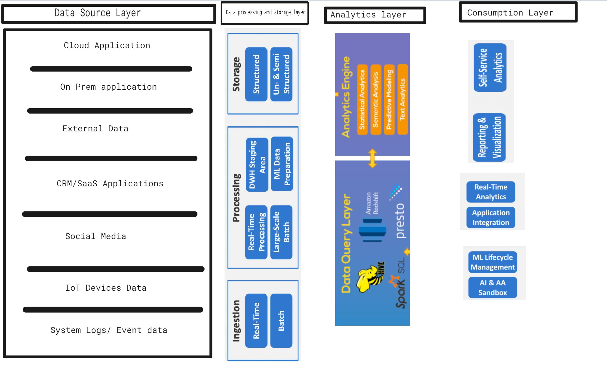

Data Platform Overview¶
Modern data architecture allow enterprises to ingest data coming from multiple systems, in a variety of data formats, different speeds, and unknown intervals. Layered data platform design makes it easy to process big data efficiently. It enables organizations to quickly deploy new data analytics business case driven solutions to drive revenue and profitability.
There are four main pillers of modern data platforms
Data source layer
Data processing and storage layer
Analytics layer
Consumption layer
Data source layer¶
Data sources can be inside the enterprise or external
Data sources generate data in real-time and in batch mode
A variety of data formats can be - structured, semi-structured, or unstructured
The velocity (speed of arrival) and volume (delivery amount) will differ by sources
Data processing and storage layer¶
It receives data from the source, converts the data into a format comprehensible for the data servicing and analytics tool, and stores the data according to its format. For example, large amounts of data can be stored in the Hadoop distributed file system (HDFS) store. Large data processing can be performed through Hadoop/Spark system. Data may undergo format changes as it is processed through these systems. Cloud service providers like Amazon, Google, and Microsoft allow a user to build and operate data-centric applications with an infinite scale. Robust and inexpensive storage is fundamental to the operation and scalability of big data architecture.
BigQuery, Azure Synapse,Amazon Redshift, and Snowflake are used as standalone solutions for big data processing or in combination of Hadoop/Spark ecosystems
Analytics layer¶
The Analytics layer reads the data ingested and transformed by the data processing and storage layer of big data ecosystem. This layer consists varieties of data analytic tools for different user requirements. This layer provides the data discovery mechanisms from huge volumes of data. Apache spark SQL, Hive, Apache spark streaming, Machine learning libraries, Apache spark GraphX, SQL libraries, and number of other tool sets are utilized in this layer to understand underlying data landscape.
Consumption layer¶
Also called the business intelligence layer,this layer receives results from the Analytical layer and presents them using visualization tools, and business processes
The following diagram summarize layers in data management solution
{kind=link}
Snowflake data platform¶
This book is focused on using Snowflake for big data processing.
Snowflake is a cloud based SaaS (Software-as-a-Service) data warehouse solutionl some of its advantages:
Is faster, easier to use, scalable, and far more flexible than other data platforms
Has an intuitive and simple interface
Services can be started quickly and delivers high-quality performance
Solves the concurrency issues with its multi-cluster warehouse architecture
Loads and processes the data quickly
Is a fully automated platform
Supports auto-scaling, big data workload, and data sharing
Allows a user to scale up the virtual warehouse and provides elasticity as per needs
The Snowflake architecture consists of three layers: storage, compute, and services .Each of these layers can be scaled independently. so organizations can scale up or down as needed and pay only for the resources they used.
In the Snowflake platform data can be ingested from a variety of data formats like Parquet, CSV, ORC, JDBC, ODBC, and XML data sources. It supports JSON to a great extent. Furthermore it:
Provides full support to create views on different data formats.
Allows data sharing support for securely sharing data with other Snowflake accounts.
Permits replication and syncing databases across multiple accounts in different regions.
Enables time travel functions to query the history of data changes over a period of time.
Snowflake is a cloud-agnostic platform providing a unified data management across multiple cloud service providers like Azure, AWS, and GCP. In other words, the Snowflake data warehouse can be built on top of Amazon web services, Microsoft Azure cloud infrastructure, or Google cloud.
The Snowflake command line client - SnowSQL can also access all aspects of managing and using Snowflake. ODBC and JDBC drivers provides easy connectivity from the application/reporting layer to Snowflake.
This book includes:
Data Sources
Different source data formats, available to build platform
Snowflake database development
Snowflake data transformation
Data pipeline orchestration
Data lineage, pipeline audit and control
SnowSQL and JavaScript based stored procedures
Business use cases, users are tasked to solve
Data visualization